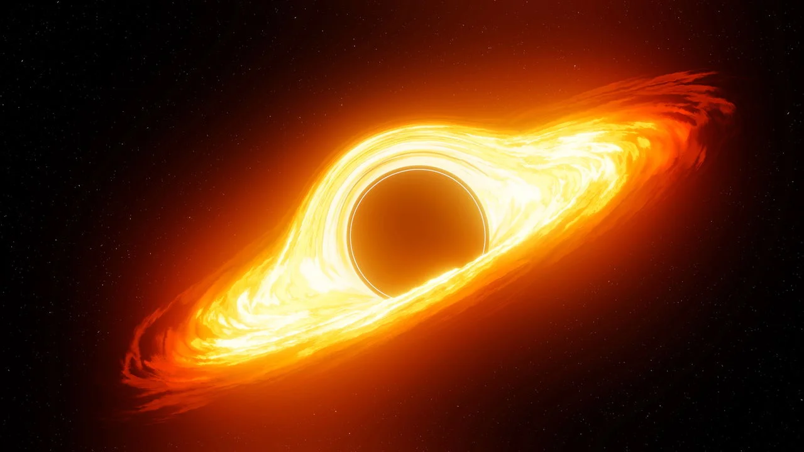
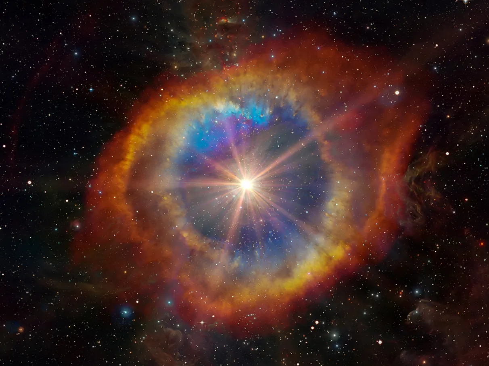
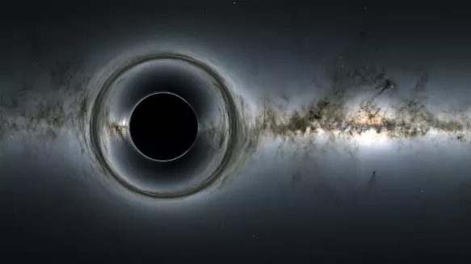
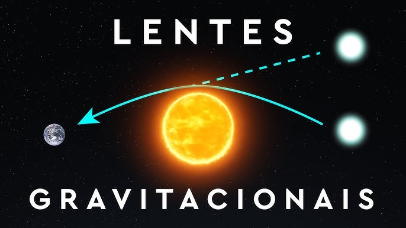
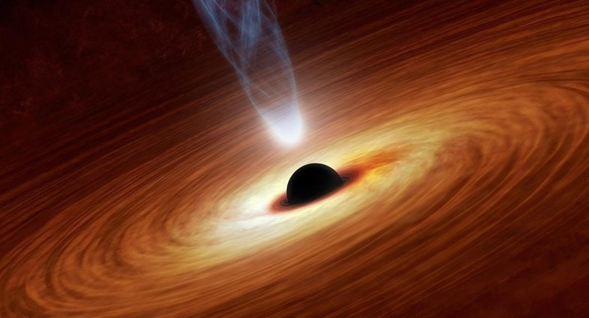
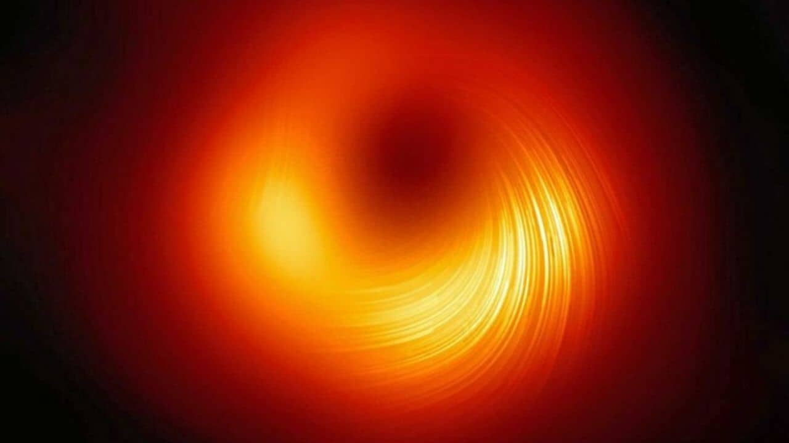

Você sabia? Edição Buracos Negros
Como são feitos
Buracos negros estelares se formam quando estrelas com massa várias vezes maior que a do Sol colapsam no fim de suas vidas, enquanto os supermassivos residem no centro da maioria das galáxias.
Horizonte de eventos
É a fronteira do buraco negro, onde a força da gravidade se torna tão intensa que nada pode escapar.
Espaguetificação
Se um objeto se aproxima demais de um buraco negro, a força gravitacional pode esticá-lo como um espaguete, um fenômeno conhecido como "espaguetificação".

Lentes gravitacionais
A intensa gravidade de um buraco negro pode dobrar a luz de objetos distantes, criando imagens distorcidas ou múltiplos reflexos, um efeito conhecido como lente gravitacional.
Jatos De Matéria
Alguns buracos negros emitem jatos de matéria e energia em alta velocidade, impulsionados por campos magnéticos intensos.
Evaporação
Teoricamente, buracos negros podem evaporar lentamente através da radiação Hawking, um processo que levaria trilhões de anos.
